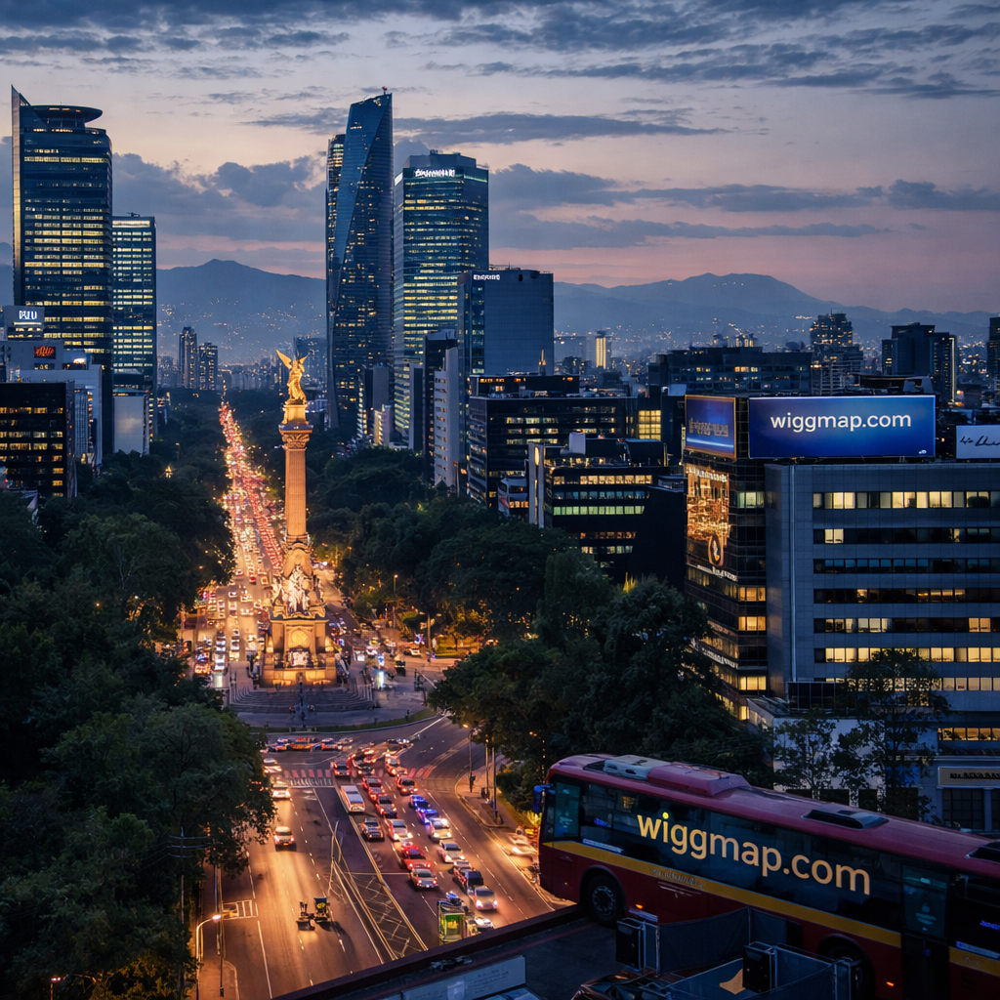

Skip to content
Entering
//
·
·
·
·
·
·
·
Where
is
the
Grass
Actually
Greener?
Scroll to enter
160 countries · real data · zero bullshit
Where is the
Grass
Lisbonne · 38.7°N
Tokyo · 35.6°N
Reykjavík · 64.1°N
Actually
Bali · 8.4°S

Mexico City · 19.4°N
Stockholm · 59.3°N
Greener
?
Find
Yours.
→
Take the quiz
00 / 08
Where
is the
grass
actually
greener?
160 countries · real data · zero bullshit
Lisbonne
Tokyo
Reykjavík
Bali
Mexico City
Stockholm
Find
Yours.
→ Take the quiz